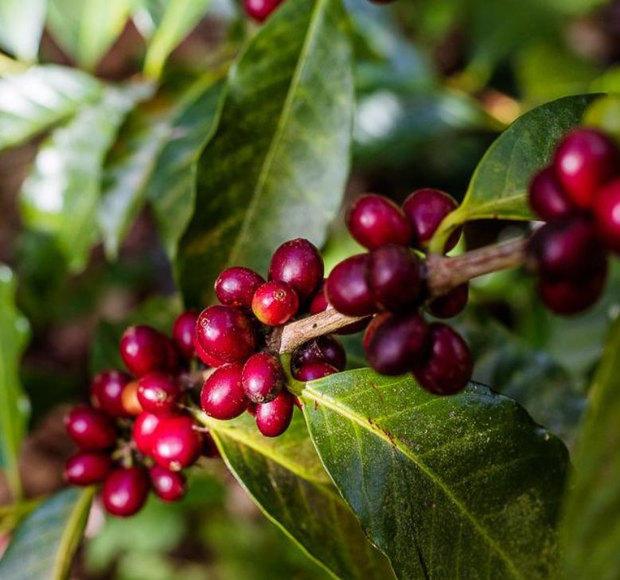

Misión
Ofrecer café costarricense de alta calidad, preparado con técnica y cuidado, en un ambiente cálido que invite a quedarse.

Café Aroma comenzó en el 2015, en el patio de la casa de la familia Vargas, cuando decidieron compartir con sus vecinos el café que tostaban para consumo propio. La buena acogida los llevó a abrir, dos años después, su primer local en Liberia, Guanacaste.
Desde entonces hemos crecido manteniendo la misma filosofía: comprar directamente a productores costarricenses, tostar en pequeños lotes y tratar a cada cliente con atención genuina. Podés conocer más sobre el café nacional en el sitio del Instituto del Café de Costa Rica o en el portal de Visit Costa Rica.
Ofrecer café costarricense de alta calidad, preparado con técnica y cuidado, en un ambiente cálido que invite a quedarse.
Ser la cafetería de referencia en Guanacaste, reconocida por su compromiso con los productores locales y la experiencia al cliente.
| Nombre | Rol | Especialidad |
|---|---|---|
| Marcela Vargas | Fundadora y gerente general | Selección de café de origen |
| Diego Rojas | Jefe de barismo | Métodos de filtrado y latte art |
| Ana Solano | Pastelera | Repostería artesanal |
| Kevin Chaves | Atención al cliente | Experiencia en sala |